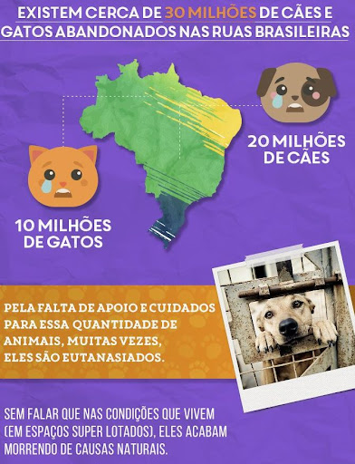

Sobre Mim
Olá, seja bem-vindo ao meu primeiro projeto de site! Meu nome é Isaias e tenho apenas 20 anos, e estou muito feliz por esse projeto estar sendo realizado. Sou uma pessoa que é muito interessada no mercado da tecnologia, mas eu também possuo uma outra paixão na minha vida, que são os animais que nós tanto amamos e que nos fazem um bem enorme! Então, decidi fazer um site focado neles, porém dando mais atenção aos pets que infelizmente acabam sendo abandonados e que necessitam de uma maior atenção e cuidado, e é por isso que eu escolhi esse tema.
Impacto do Abandono
O abandono de animais é uma questão social séria e tem impactos negativos não apenas na saúde e bem-estar dos próprios animais, como também nas comunidades em que vivem. Por isso, a conscientização sobre o tema é essencial para combater o problema. Algumas atitudes simples ajudam a diminuir o número de abandonos e a promover uma melhor qualidade de vida para esses animais. A principal delas é a adoção consciente e responsável.
Importância da Adoção
A adoção responsável é um ato de amor que não apenas muda a vida de um animal abandonado, mas também traz inúmeros benefícios para quem decide abrir as portas de seu lar e coração para um novo membro da família. Neste artigo, vamos explorar a importância da adoção consciente e como ela contribui para o resgate de animais abandonados. A triste realidade é que muitos animais são abandonados todos os dias, seja por motivos financeiros, mudanças de vida ou simplesmente por falta de responsabilidade dos antigos tutores. Esses animais indefesos enfrentam uma jornada difícil, vivendo nas ruas, sofrendo com a fome, doenças e a solidão. É aí que a adoção responsável entra em ação. Ao adotar um animal, você não apenas dá a ele uma segunda chance de ter uma vida feliz e segura, mas também está contribuindo para o resgate de um ser vulnerável. Cada adoção responsável significa uma vida salva e um animal a menos sofrendo nas ruas ou abrigos superlotados.
Meus Pets
Este cachorrinho bonito que vocês estão vendo é o meu filho, ele se chama Dado. Ele já está conosco a 10 anos, e nós o amamos demais, tanto que toda a nossa família ama ele. Ele era de rua e foi resgatado pelo pessoal da Petz, e minha mãe comprou ele na época para nós, pois eu e a minha irmã queríamos muito um cachorro, e por isso ela trouxe esse bonitão pra casa.
Essa é a nossa gata Lois, que também está conosco a uns 8-9 anos também. Ela nós ganhamos de presente, e tem estado conosco durante todo esse tempo, e nós também a amamos muito, fora que é a primeira gata que a nossa família teve, pois nós só tínhamos cachorro até o momento, mas ela foi um dos melhores presentes que já recebemos.
Esses são os pets que eu tanto amo, e eles se dão super bem, a ponto de até parecerem irmãos de verdade, principalmente na parte de dormir, nisso eles são completamente iguaizinhos. E sinceramente, não sei o que seria de nós sem esses amigos que nos dão tanto amor e alegria! 💕